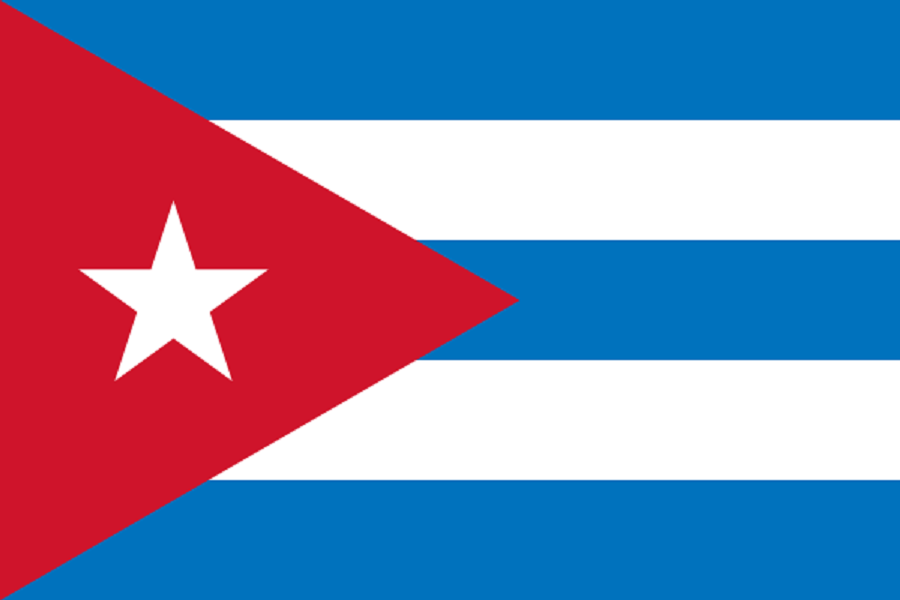
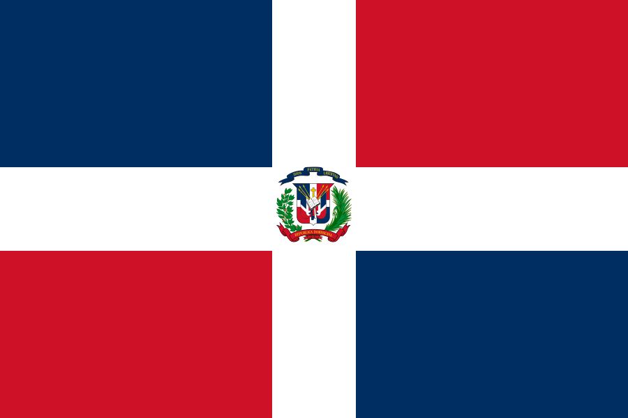

政治顾问列表
原页面：List of political advisors
这是在启用全部 DLC 的情况下，每个国家的所有政治顾问列表。它不包含大多数可释放国家。
| 国家 | 名称 | 特质（消歧义） | 效果 |
|---|---|---|---|
| 通用 | 随机 | 共产主义革命者 |
|
| 通用 | 随机 | 民主改革者 |
|
| 通用 | 随机 | 法西斯煽动家 |
|
| 通用 | 随机 | 神秘绅士 |
|
| 阿卜杜勒·马吉德·扎布利（Abdul Majid Zabuli） | 金融专家 |
| |
| 阿卜杜勒·哈伊·哈比比（Abdul Hai Habibi） | 教育改革者 |
| |
| 古拉姆·叶海亚·汗·塔尔齐（Ghulam Yahya Khan Tarzi） | 卫生主管 | ||
| 基亚穆丁·哈迪姆（Qiamuddin Khadim） | 社会主义记者 | ||
| 古拉姆·穆罕默德·戈巴尔（Ghulam Muhammad Ghobar） | 社会民主主义者 | ||
| 图拉巴兹·汗（Turabaz Khan） | 神秘绅士 |
| |
| 穆罕默德·古尔·汗·莫曼德（Mohammad Gul Khan Momand） | 普什图民族主义者 |
| |
| 萨达尔·沙阿·马哈茂德·汗（Sardar Shah Mahmud Khan） | 稳妥之手 | ||
| 索拉娅·塔尔齐（Soraya Tarzi） | 教育改革者 |
| |
| 阿卜杜拉乌夫·菲特拉特（Abdurauf Fitrat） | 乌兹别克学者 |
| |
| 法伊祖拉·霍贾耶夫（Fayzulla Xo'jayev） | 布哈拉扎吉德主义者 | ||
| 希尔·穆罕默德-别克·加齐（Shir Muhammad-bek Gazi） | 浩罕暴动者 |
| |
| 朱奈德·汗（Junaid Khan） | 土库曼之汗 |
| |
| 谢尔·阿里·谢尔汗扎伊（Sher Ali Sherkhanzai） | 法西斯作家 |
| |
| 伊纳亚图拉·汗（Inayatullah Khan） | 王室傀儡 |
| |
| 努尔·穆罕默德·塔拉基（Nur Muhammad Taraki） | 红衫军 | ||
| 努鲁勒·马沙伊赫·谢赫·法兹勒·奥马尔·穆贾迪迪（Nurul Mashaw'ikh Shaikh Fazl Omar Mojadidi） | 有影响力的宗教领袖 |
| |
| 谢尔·汗·纳希尔（Sher Khan Nashir） | 昆都士之父 |
| |
| 阿卜杜勒·哈迪·达维（Abdul Hadi Dawi） | 财政大臣 |
| |
| 詹姆斯·史密斯（James Smith） | 军工实业家 | ||
| 罗伯特·约翰逊（Robert Johnson） | 经济学家 |
| |
| 约翰·史蒂文斯（John Stevens） | 军备组织者 | ||
| 尼萨尔·穆罕默德·优素福扎伊（Nisar Muhammad Yousafzai） | 共产主义暴动者 |
| |
| 菲克里·迪内（Fiqri Dine） | 军工实业家 | ||
| 米德哈特·弗拉舍里（Midhat Frashëri） | 受拥戴的傀儡领袖 |
| |
| 乔斯林·珀西爵士（Sir Jocelyn Percy） | 恐怖亲王 |
| |
| 阿古斯丁·佩德罗·胡斯托（Agustín Pedro Justo） | 民族主义实业家 |
| |
| 罗伯托·玛丽亚·奥尔蒂斯（Roberto María Ortiz） | 顺从的政客 |
| |
| 拉蒙·卡斯蒂略（Ramón Castillo） | 言辞犀利的律师 |
| |
| 佩德罗·巴勃罗·拉米雷斯（Pedro Pablo Ramirez） | 军国民族主义者 |
| |
| 埃德尔米罗·胡利安·法雷尔（Edelmiro Julián Farrell） | 军需总监 | ||
| 尼米奥·德·安金（Nimio de Anquín） | 阿根廷法西斯主义者 |
| |
| 马塞洛·T·德·阿尔维亚尔（Marcelo T. de Alvear） | 民主斗士 | ||
| 恩里克·莫斯卡（Enrique Mosca） | 民主改革者 |
| |
| 维多里奥·科多维利亚（Victorio Codovilla） | 共产主义革命者 |
| |
| 范妮·埃德尔曼（Fanny Edelman） | 社会主义女权主义者 | ||
| 罗多尔福·吉奥尔迪（Rodolfo Ghioldi） | 社会主义作家 | ||
| 安东尼奥·索托（Antonio Soto） | 反工会的纯粹无政府主义者 |
| |
| 曼努埃尔·玛丽亚·德·伊里翁多（Manuel María de Iriondo） | 恐怖亲王 |
| |
| 乌戈·瓦斯特（Hugo Wast） | 幕后暗算者 |
| |
| 劳尔·普雷维什（Raúl Prebisch） | 工业巨头 | ||
| 胡利奥·阿根廷诺·帕斯夸尔·罗卡（Julio Argentino Pascual Roca） | 沉默的实干家 |
| |
| 奥诺里奥·普埃雷东（Honorio Pueyrredón） | 仁慈绅士 |
| |
| 迪奥赫内斯·塔博阿达（Diógenes Taboada） | 金融专家 |
| |
| 吉列尔莫·罗特（Guillermo Rothe） | 社会改革者 |
| |
| 弗雷德里克·皮内多（Frederick Pinedo） | 社会主义经济学家 | ||
| 何塞·玛丽亚·坎蒂洛（José María Cantilo） | 巧舌如簧 |
| |
| 恩里克·鲁伊斯·吉尼亚苏（Enrique Ruiz Guiñazú） | 坚韧的谈判者 |
| |
| 维森特·C·加略（Vicente C. Gallo） | 大学校长 |
| |
| 卡洛斯·萨维德拉·拉马斯（Carlos Saavedra Lamas） | 诺贝尔和平奖得主 |
| |
| 奥斯马尔·赫尔穆特（Osmar Hellmuth） | 玻利瓦尔特工 |
| |
| 伊娃·庇隆（Eva Perón） | 妇女庇隆主义倡导者 |
| |
| 比利·休斯（Billy Hughes） | 战时预言家 | ||
| 本·奇夫利（Ben Chifley） | 战争筹资者 | ||
| P.R.斯蒂芬森（P.R. Stephensen） | 祖国倡导者 |
| |
| 阿德拉·潘克赫斯特·沃尔什（Adela Pankhurst Walsh） | 女族长 |
| |
| A·霍尔-鲁斯文（A. Hore-Ruthven） | 总督 |
| |
| 埃辛顿·刘易斯（Essington Lewis） | 钢铁业商人 |
| |
| 雅各布·沃扎（Jacob Vouza） | 不屈的侦察兵 |
| |
| 杰弗里·斯特里特（Geoffrey Street） | 军事扩张主义者 | ||
| 杰克·朗（Jack Lang） | 情报主管 |
| |
| 杰克·朗（Jack Lang） | 工业民粹主义者 |
| |
| 多萝西·坦尼（Dorothy Tangney） | 学术倡导者 |
| |
| 阿瑟·法登（Arthur Fadden） | 政坛中坚 |
| |
| 詹姆斯·斯卡林（James Scullin） | 税制改革者 |
| |
| 莫里斯·布莱克本（Maurice Blackburn） | 不屈的自由思想家 |
| |
| 亚历山大·拉德·米尔斯（Alexander Rud Mills） | 士兵权利倡导者 |
| |
| 雷克斯·英加梅尔斯（Rex Ingamells） | 文化远见者 |
| |
| 克莱尔·史蒂文森（Clare Stevenson） | 妇女服务主管 |
| |
| 理查德·迪克森（Richard Dixon） | 革命平等主义者 |
| |
| 赫伯特·V·伊瓦特（Herbert V. Evatt） | 公正的外交家 |
| |
| 杰克·比斯利（Jack Beasley） | 补给大臣 | ||
| 弗兰克·福德（Frank Forde） | 偏执的爱国者 |
| |
| 兰斯·夏基（Lance Sharkey） | 「正统斯大林主义者」 |
| |
| Jack Piddington | Electrical Engineer |
| |
| 库尔特·舒施尼格 | Fascist Corporatist | ||
| 恩斯特·吕迪格·施塔海姆贝格 | 施塔海姆贝格家族亲王 | ||
| 阿图尔·赛斯-英夸特 | 恐怖亲王 |
| |
| Julius Raab | 工业巨头 | ||
| Leopold Figl | 受拥戴的傀儡领袖 |
| |
| Franz Winkler | The Putschminister | ||
| Ludwig von Mises | Monarchist Treasurer |
| |
| Heimito von Doderer | 法西斯作家 |
| |
| Hans Pertner | Minister of Education |
| |
| Johannes of Liechtenstein | The Younger Prince of Liechtenstein | ||
| 列支敦士登的阿洛伊斯 | The Older Prince of Liechtenstein |
| |
| 海因里希·迈尔 | Secretive Priest | ||
| Leopold Waber | Fascist Advocate |
| |
| Viktor Kienböck | Financier of Fascism |
| |
| Karl Polheim | Ruthless University Rector |
| |
| Marianne Pollak | 社会主义女权主义者 | ||
| Bruno Kreisky | Meticulous Lawyer | ||
| Theodor Innitzer | Fascist Cardinal |
| |
| Elizabeth von Gutmann | Resourceful Princess | ||
| Malke Schorr | The Red Helper | ||
| Egon Schönhof | Communist Lawyer |
| |
| Franz Koritschoner | 共产主义革命者 | ||
| 阿道夫·舍尔夫 | 沉默的实干家 |
| |
| 阿道夫·霍赫 | Renowned Architect | ||
| Otto Bauer | The Father of Austromarxism | ||
| Ernst Kaltenbrunner | 神秘绅士 |
| |
| Maximilian Ronge | Veteran Head of the Agency |
| |
| Friedrich Mandl | 军工实业家 | ||
| 西里尔·阿杜拉 | 工会成员 | ||
| Joris Six | Apostolic Vicar of Léopoldville |
| |
| Simon Kimbangu | Jesus Christ's Special Envoy |
| |
| Marcel Maquet | District Commissioner of Léopoldville |
| |
| Alexandre Safiannikoff | Congolese Polymath | ||
| Robert de Mûelenaere | Colonial Lawyer |
| |
| Jean Bolikango | Independence Advocate and Teacher |
| |
| Patrice Lumumba | Anti-Imperialist Thinker | ||
| Joseph Iléo | Activist for Self-Rule | ||
| Isaac Kalonji | Intellectual Évolué Entrepreneur |
| |
| 尤希五世·穆辛加 | The Exiled Tutsi King | ||
| Armand Huyghé de Mahenge | Corporate Knight | ||
| Eugène Jungers | Governor of Ruanda-Urundi |
| |
| Auguste Tilkens | Head of Comité Spécial du Katanga |
| |
| Albert de Vleeschauwer | Belgian Minister of Colonies |
| |
| 于贝尔·皮埃洛 | 外交大臣 |
| |
| 保罗-亨利·斯巴克 | Canny Diplomat |
| |
| Leon Degrelle | Fascist Firebrand |
| |
| 亨利·德曼 | 胸有成竹之人 | ||
| 佛兰德伯爵夏尔 | Quiet Royal |
| |
| Dieudonné Saive | Arms Designer |
| |
| Prudent Nuyten | Minister of National Defence |
| |
| Albert Deveze | Minister of National Defence |
| |
| 爱德华·范登贝尔根 | Mobilization Proponent |
| |
| Camille Gutt | 金融专家 |
| |
| Camille Huysmans | Minister of Education |
| |
| Julien Lahaut | 共产主义革命者 |
| |
| Émile de Cartier de Marchienne | Ambassador to London |
| |
| Edgar Sengier | Uranium Magnate |
| |
| Walthere Dewe | Illusive Mastermind |
| |
| August Borms | 法西斯煽动家 |
| |
| Achille van Acker | Minister of Public Health |
| |
| 吉格梅·帕尔登·多吉 | 工业巨头 | ||
| 索南·托杰·多吉 | 幕后暗算者 |
| |
| 芒波·布尔巴 | 受拥戴的傀儡领袖 |
| |
| 玻利维亚 | Tomas Monje Gutierrez | Judge and Newspaper Editor | |
| 玻利维亚 | José Santos Quinteros | 教育改革者 |
|
| 玻利维亚 | Fabian Vaca Chavez | 外交部长 |
|
| 玻利维亚 | Julian Montellano Carrasco | 传统主义理论家 | |
| 玻利维亚 | Enrique Finot | 外交部长 |
|
| 欧里科·加斯帕尔·杜特拉 | Minister of Defense | ||
| Washington Luis Pereira | Deposed Former President | ||
| Osvaldo Aranha | Renowned Ambassador | ||
| Afranio de Mello Franco | Nobel Peace Prize Nominee |
| |
| José Linhares | Supreme Court Justice | ||
| Benedito Valadares | Political Fox |
| |
| Alfred Agache | Modernist Architect |
| |
| João Neves da Fontoura | Distinguished Diplomat | ||
| João Marques dos Reis | Minister of Transport | ||
| Francisco Campos | Right-Wing Ideologue | ||
| Filinto Müller | Head of the Political Police |
| |
| 林多尔福·科洛尔 | Anti-Authoritarian |
| |
| José Américo de Almeida | Academic Writer | ||
| Anísio Teixeira | 教育先驱 |
| |
| Armando de Sales Oliveira | Democratic Engineer | ||
| 米内尔维诺·德奥利维拉 | 工会成员 | ||
| Olga Benário Prestes | Soviet Spy |
| |
| Apolônio de Carvalho | Militant Communist | ||
| 随机 | 军工实业家 | ||
| 随机 | 工业巨头 | ||
| 多明戈斯·布拉斯 | 虔诚的共产党人 |
| |
| Leoncio Basbaum | Communist Intellectual | ||
| Gustavo Barroso | 法西斯军国主义者 | ||
| Miguel Reale | 法西斯宣传家 |
| |
| Oliveira Viana | Controversial Academic |
| |
| Geremia Lunardelli | Coffee King | ||
| Henry Ford | Vengeful Industrialist | ||
| 随机 | 能说会道的魅力者 |
| |
| 随机 | 民主改革者 |
| |
| 随机 | 共产主义革命者 |
| |
| 随机 | 工业巨头 | ||
| 随机 | 恐怖亲王 |
| |
| 随机 | 法西斯煽动家 |
| |
| Mahatma Mohandas Gandhi | Independence Activist | ||
| 苏巴斯·钱德拉·鲍斯 | Pragmatic Authoritarian | ||
| Arcot Doraiswamy Loganadan | Governor of the Andaman Islands | ||
| Bhimrao Ramji Ambedkar | 民主改革者 |
| |
| Ukkirapandi Muthuramalinga Thevar | Social Agitator |
| |
| Sarat Bose | Revolutionary Barrister |
| |
| John Edward Golightly | 沉默的实干家 |
| |
| Chakravarti Rajagopalachari | 受拥戴的傀儡领袖 |
| |
| 贾瓦哈拉尔·尼赫鲁 | Anti-Colonial Humanist | ||
| 穆罕默德·阿里·真纳 | All-India Muslim League Leader |
| |
| Tara Singh | Sikh Activist | ||
| Rash Behari Bose | Exiled Dissident | ||
| John Mathai | 工业巨头 | ||
| Sir Muhammed Iqbal | Muslim Scholar |
| |
| Agha Khan III | Well-Mannered Iman |
| |
| 米尔·奥斯曼·阿里·汗 | Wealthy Philanthropist |
| |
| 奇特拉·蒂鲁纳尔·巴拉拉马·瓦尔马 | Cautious Investor | ||
| 艾哈迈德·亚尔·汗 | Anti-Socialist |
| |
| 侯赛因·沙希德·苏拉瓦底 | Economic Realist |
| |
| 大君哈里·辛格 | Divisive Monarch |
| |
| 博德·钱德拉·辛格 | Cautious Strategist |
| |
| 乌梅德·辛格 | A Way With Words |
| |
| 普拉塔普·辛格·拉奥·盖克瓦德 | Costly Reformer |
| |
| 大君贾亚查马拉金德拉·瓦迪亚尔 | Cultural Icon |
| |
| Jim Corbett | Conservationalist |
| |
| Puran Chand Joshi | Freedom Fighter |
| |
| Bhalchandra Trimbak Ranadive | Trade Union Leader |
| |
| Elamkulam Manakkal Sakaran Namboodiripad | Founder of the CSP |
| |
| Shripad Amrit Dange | Union Leader | ||
| Sahajanand Saraswati | 社会改革者 |
| |
| G.D Birla | Motor Tycoon | ||
| J. R. D. Tata | Tata Chairman |
| |
| William Rhodes Davis | Independent Oil Operator | ||
| Prescott Bush | Banking Mogul | ||
| 随机 | 神秘绅士 |
| |
| 随机 | 工业巨头 | ||
| 随机 | 军工实业家 | ||
| 随机 | 沉默的实干家 |
| |
| 随机 | 幕后暗算者 |
| |
| 格奥尔基·伊万诺夫·基奥塞瓦诺夫 | Tsar's Puppet |
| |
| Stefan Nedev | 神秘绅士 |
| |
| Stoycho Mushanov | 民主改革者 |
| |
| Nikola Petkov | Leader of the Agrarian Union | ||
| Konstantin Muraviev | 仁慈绅士 |
| |
| Stefan Stefanov | Industry Reformer | ||
| Dimitrana Ivanova | Women's Rights Activist | ||
| Vasil Kolarov | 共产主义革命者 |
| |
| Valko Chervenkov | 工业巨头 | ||
| Todor Pavlov | 马克思主义哲学家 | ||
| Ivan Dochev | 法西斯煽动家 |
| |
| 亚历山达尔·灿科夫 | Statism Adept | ||
| Nikola Zhekov | 纳粹同情者 |
| |
| Dobri Bozhilov | 工业巨头 | ||
| 博格丹·菲洛夫 | Ambitious Negotiator | ||
| 博格丹·菲洛夫 | Ambitious Negotiator | ||
| 基蒙·格奥尔基耶夫 | 技术官僚 |
| |
| Chuck Crate | 法西斯煽动家 |
| |
| Robert Manion | 民主改革者 |
| |
| William Kashtan | 共产主义革命者 |
| |
| Ian A. Mackenzie | 军需总监 | ||
| R. B. Bennett | 沉默的实干家 |
| |
| Newton Wesley Rowell | 意识形态斗士 |
| |
| Léo Richer Laflèche | 受拥戴的傀儡领袖 |
| |
| James Ilsley | 军工实业家 | ||
| Louis St. Laurent | 仁慈绅士 |
| |
| C.D. Howe | 工业巨头 | ||
| 豪尔赫·冈萨雷斯·冯·马雷斯 | 首领 | ||
| 卡洛斯·孔特雷拉斯·拉巴尔卡 | Communist Intellectual | ||
| 佩德罗·阿吉雷·塞尔达 | Father of Industrialization |
| |
| Luis Álamos Barros | Minister of Trade and Development |
| |
| Miguel Cruchaga Tocornal | President of the Senate | ||
| Gustavo Ross Santa María | 财政大臣 |
| |
| Elías Lafertte Gaviño | The Miners' Representative | ||
| 卡洛斯·伊巴涅斯·德尔坎波 | Ibañismo |
| |
| Carlos Keller Rueff | Pan-Hispanic Theorist |
| |
| Juan Gómez Millas | Harsh Propagandist | ||
| 曼努埃尔·伊达尔戈·普拉萨 | Minister of Public Works | ||
| Gabriel González Videla | Anti-Communist Crusader |
| |
| 爱德华多·克鲁斯-科克 | Minister of Public Health |
| |
| 曼努埃尔·曼基莱夫 | Defender of Araucanían Sovereignty |
| |
| 埃斯特班·罗梅罗·桑多瓦尔 | Mapuche Economist |
| |
| 吉列尔莫·巴里奥斯·蒂拉多 | Minister of Defense | ||
| Francisco Javier Díaz Valderrama | Defender of the Race |
| |
| Ricardo Fonseca Aguayo | Militant Communist |
| |
| Humberto Arriagada Valdivieso | 神秘绅士 |
| |
| Ulk | Face Licker | ||
| Elena Caffarena | Women's Rights Activist | ||
| Pablo Neruda | 社会主义作家 | ||
| Jaime Alfonso Quintana | Agricultural Capitalist |
| |
| María de la Cruz | Radical Suffragette | ||
| Marta Vergara | Feminist Editor | ||
| Salvador Allende | Reformist Minister of Health | ||
| Rayén Quitral | Famous Soprano |
| |
| Jorge Alessandri | Conservative Businessman | ||
| Guido Benedikt Beck | Apostolic Prefect of Araucania |
| |
| Gabriela Mistral | Popular Latinian Poet |
| |
| Juan Bautista Rossetti | 社会主义经济学家 | ||
| Emilio Bello Codesido | Minister of Defense |
| |
| Ernesto Barros Jarpa | 外交大臣 |
| |
| Francisco Antonio Encina | Agricultural National Socialist | ||
| José Santos Salas Morales | Minister of Social Assistance | ||
| Ramón Subercaseaux Pérez | President of the Central Bank |
| |
| Manuel Aburto Panguilef | Mapuche Traditionalist |
| |
| Óscar Schnake | Anarcho-Socialist | ||
| Bernardo Leighton | The National Falange | ||
| Tancredo Pinochet | University Fascist |
| |
| Emilio Zapata Diaz | National Housing Front Champion |
| |
| Radomiro Tomic Romero | Influential Christian Democrat | ||
| Roberto Wachholtz Araya | Transport Minister | ||
| Arturo Olavarría | Chilean Anticommunist Action | ||
| Rolando Merino Reyes | Minister of Lands and Colonization | ||
| Jerónimo Méndez | Minister of the Interior |
| |
| Miguel Serrano Fernández | National Socialist Occultist | ||
| Manuel Antonio Neculmán | 教育改革者 |
| |
| Benjamín Matte Larraín | Minister of Agriculture | ||
| Pedro Enrique Alfonso | Minister of Economy and Commerce |
| |
| Guillermo Paulino Izquierdo Araya | Agrarian Nationalist |
| |
| Osvaldo Lira Pérez | Fascist Theologian | ||
| Carlos Huayquiñir | Mapuche Journalist |
| |
| 戴笠 | Spymaster |
| |
| 宋美龄 | 共和国第一夫人 |
| |
| Chiang Ching-Kuo | 沉默的实干家 |
| |
| Mao Renfeng | BIS Spymaster |
| |
| Dai Jitao | President of Examination Yuan | ||
| H. H. Kung | 工业巨头 | ||
| Chen Yi | 仁慈绅士 |
| |
| Lin Sen | Chairman of the Republic |
| |
| Chen Guofu | CC Clique Leader |
| |
| Chen Lifu | Technocratic Minister of Education |
| |
| Du Yuesheng | Shanghai Financier |
| |
| Huang Jinrong | Former Police Officer |
| |
| Chu Minyi | 教育改革者 |
| |
| Mei Siping | 工业巨头 | ||
| Zhou Fohai | 财政大臣 |
| |
| Hu Hanmin | Harsh Propagandist | ||
| Zou Lu | 民族主义教育热衷者 |
| |
| Ju Zheng | Judicial Yuan President | ||
| Y.C James Yen | 教育改革者 |
| |
| Liang Shuming | Constitutional Philosopher |
| |
| Li Huang | 第三势力 | ||
| Zhang Qun | Vice Premier |
| |
| Symeon Du | Chinese Orthodox Church Minister |
| |
| Sun Fo | Kuomintang Liberal |
| |
| Zhu Jiahua | Minister of Transport and Communication | ||
| Zou Taofen | 自由派记者 | ||
| Tao Xingzhi | 革命教育家 |
| |
| Shen Junru | Meticulous Lawyer | ||
| Shi Liang | Communist Lawyer |
| |
| Chang Kia-Ngau | Finance Graduate |
| |
| Chen Bijun | 共和国第一夫人 |
| |
| Chen Gongbo | 经济学家 |
| |
| Gao Zongwu | Modernizer And Diplomat |
| |
| Wang Chonghui | Skillful Diplomat |
| |
| 宋子文 | 金融专家 |
| |
| 邝江 | 民主改革者 |
| |
| 翁文灏 | Geologist |
| |
| José Ellis Quinsado | 幕后暗算者 |
| |
| M.E. Rojas de Moreno | 受拥戴的傀儡领袖 |
| |
| Raphael Hollmann | 仁慈绅士 |
| |
| Jorge Lopez Suyo | 恐怖亲王 |
| |
| 毛泽东 | Agrarian Revolutionary |
| |
| 张国焘 | Dubious Loyalty |
| |
| 王明 | 28 ½ Suppressed |
| |
| 博古 | 28 ½ Suppressed |
| |
| Zhang Wentian | Agricultural Reformer | ||
| Zhou Enlai | Multi-Talented Diplomat |
| |
| 邓小平 | Promising Future |
| |
| Xie Juezai | Minister of Internal Affairs |
| |
| Lin Boqu | Minister Of Finance |
| |
| Liu Shaoqi | Labor Rights Advocate |
| |
| Dong Biwu | 马克思主义哲学家 | ||
| Deng Zihiu | Agricultural Reformer | ||
| Li Zhen | President of School for Female Officers | ||
| Li Lisan | Holding the Line |
| |
| Gao Gang | Charming Revolutionary | ||
| Wang Shiwei | 社会主义记者 | ||
| Ren Bishi | Soviet Negotiator |
| |
| Wang Jiaxiang | Avid Maoist | ||
| Mao Zemin | Head of the State Bank |
| |
| Wu Han | Democratic Reformist | ||
| Xu Teli | Minister of Education |
| |
| Chen Changhao | 28 ½ Suppressed |
| |
| 康生 | Trained by the NKVD |
| |
| Cai Chang | Member of the Central Committee |
| |
| Wu Yuzhang | Professor |
| |
| Chen Yun | 组织者 |
| |
| Chen Tanqiu | Behind Enemy Lines |
| |
| Chen Shaomin | Veteran Trade Unionist | ||
| Deng Yingchao | Secretary General Of Women's Committee | ||
| Bo Yibu | 双面间谍 |
| |
| Shao Shiping | Director of Food Bureau |
| |
| Pavel Mif | 28 ½ Suppressed Mentor |
| |
| Deng Fa | Illusive Spy |
| |
| 奥托·科尔特斯·费尔南德斯 | 沉默的实干家 |
| |
| 何塞·菲格雷斯·费雷尔 | 仁慈绅士 |
| |
| 罗伯托·布雷内斯·梅森 | 工业巨头 | ||
| 胡利奥·阿科斯塔·加西亚 | 军工实业家 | ||
| 奇科·奥利奇·博尔马里克 | 受拥戴的傀儡领袖 |
| |
 古巴 |
Carlos Prio | 能说会道的魅力者 |
|
| 古巴 | Gerardo Machado | 沉默的实干家 |
|
| 古巴 | Eugenio Molinet Castro | 工业巨头 | |
| 爱德华·贝奈斯 | Diplomatic Workhorse 2nd Prezident |
| |
| 卡雷尔六世·施瓦岑贝格 | 法西斯煽动家 |
| |
| Josef Rozsévač | Militant Minister | ||
| Konrad Henlein | National Socialist Paramilitarist |
| |
| Vojtech Tuka | Slovakian Nationalist | ||
| Bohumil Laušman | 工业巨头 | ||
| Alois Tučný | Minister of Posts and Telegraphs |
| |
| Jozef Tiso | 幕后暗算者 |
| |
| Rudolf Bechyně | Minister of Railways | ||
| Ferdinand Catlos | 军需总监 | ||
| Zdeněk Fierlinger | Pro-Soviet Diplomat Beneš's Lackey |
| |
| Kamil Krofta | Beneš's Foreign Affairs Minister |
| |
| Milada Horáková | Women's Rights Activist | ||
| Štefan Osuský | 民主斗士 | ||
| František Chvalkovský | Overly Pragmatic Diplomat | ||
| Božena Macháčová-Dostálová | Socialist Firebrand Union Woman |
| |
| Jaroslav Šlechta | Prolific Aviator |
| |
| Hugo Vavrečka | 经济学家 |
| |
| Jan Antonín Baťa | Industrialist Emperor | ||
| Dominik Čipera | Industrialist Lackey | ||
| Ferdinand Peroutka | 自由派记者 | ||
| Karel Domin | Nationalistic Agitating Academic | ||
| Josef Kalfus | 财政大臣 |
| |
| Emil Kolben | General Director of ČKD |
| |
| Jan Dostálek | Minister of Public Works |
| |
| Dr. Emil Franke | Minister of Education |
| |
| Jan Krčmář | Minister of Education |
| |
| Jan Šrámek | Leader of the ČSL |
| |
| Karel Husárek | 筑垒工程师 | ||
| František Machník | Minister of Defense Beneš's Lackey |
| |
| Stanislav Bukovský | Sokol Movement Administrator |
| |
| Josef Černý | Minister of the Interior |
| |
| Rudolf Mlčoch | Minister of Industry and Trade |
| |
| Ludwig Czech | Minister of Health Beneš's Lackey |
| |
| Karel Engliš | 金融专家 |
| |
| Augustin Voloshyn | Prime Minister of Carpathian Ukraine | ||
| Jan Jiří Rückl | Right Industrialist 经济学家 |
| |
| Pavel Reiman | 社会主义作家 | ||
| Václav Kopecký | 资深共产党人 坚定的共产党人 |
| |
| Josef Guttman | 虔诚的共产党人 |
| |
| Ernst Fischer | 社会主义记者 Austrian Exile |
| |
| Vladimir Mandl | Space Lawyer | ||
| František Moravec | 神秘绅士 |
| |
| František Moravec | Bold Intelligence Officer |
| |
| Šimon Drgáč | 神秘绅士 |
| |
| 托瓦尔·斯陶宁 | 坚定的社会民主主义者 | ||
| 克努兹·巴赫 | Landbrugsminister | ||
| 阿克塞尔·拉森 | 共产主义革命者 |
| |
| 弗里茨·克劳森 | 法西斯煽动家 |
| |
| Peter Rochegune Munch | Disarmament Proponent |
| |
| 克里斯马斯·默勒 | Rearmament Proponent | ||
| 维尔海姆·布尔 | Finansminister |
| |
| Erik Scavenius | Udenrigsminister |
| |
| Jørgen Jørgensen | Undervisningsminister |
| |
| 克努兹·克里斯滕森 | 工业巨头 | ||
| Arnold Peter Møller | Industry Magnate | ||
| Hans Hedtoft | 幕后暗算者 |
| |
| Alsing Andersen | Forsvarsminister | ||
| Karl Kristian Steincke | Welfare Architect |
| |
| 凯·伦布克 | 恐怖亲王 |
| |
| Emil Strøbech | 神秘绅士 |
| |
 多米尼加 |
埃利亚斯·布拉切 | 仁慈绅士 |
|
| 多米尼加 | 曼努埃尔·德赫苏斯·特龙科索 | 军备组织者 | |
| 多米尼加 | 哈辛托·别恩韦尼多·佩纳多 | 能说会道的魅力者 |
|
| Sukarno | 人民的领袖 |
| |
| 陈马六甲 | Revolutionary Strategist |
| |
| Musso | Returned From Moscow |
| |
| Andries Cornelis Dirk de Graeff | Dutch Minister |
| |
| Christian Bodenhausen | 财政大臣 |
| |
| Harry Kuneman | Dutch Representative |
| |
| Adipati Soejono | Indonesian Minister |
| |
| Mohammad Tharmin | Independence Activist |
| |
| Oto Iskandar di Nata | Representative of Welfare |
| |
| I.J.K. Hendrowahyono | Representative of Catholic Affairs |
| |
| Dick de Hoog | Strict Loyalist |
| |
| Soetardjo Kartohadikusomo | Collaborationist | ||
| Hok Hoei Kan | Representative of Chinese Affairs |
| |
| Sam Ratulangi | Nationalist Scholar |
| |
| Achmad Soebardjo | 外交大臣 |
| |
| Wiranatakusumah V | Minister of Home Affairs |
| |
| Surachman Tjokroadisurjo | Minister of Welfare | ||
| Supomo | Minister of Justice |
| |
| Dr Samsi Sastrawidagda | 财政大臣 |
| |
| Ki Hajar Dewantara | Minister of Education |
| |
| Iwa Kusuma Sumantri | Minister of Social Affairs |
| |
| Dr Boentaran Martooatmodjo | Minister of Healthcare |
| |
| Mohammad Natsir | Spymaster |
| |
| Mohammad Roem | Minister of Home Affairs |
| |
| Sjafruddin Prawiranegara | President of De Javasche Bank |
| |
| 伊达·伊·德瓦·阿贡·格德·奥卡·格 | 巴厘最高领主 |
| |
| 阿拉丁·穆罕默德·达乌德·沙阿二世 | The Veranda of Mecca |
| |
| 谢里夫·哈米德二世 | The Merchant Sultan of Pontianak | ||
| 苏丹穆罕默德·塔希尔·穆希布丁 | 戈瓦的松巴亚 |
| |
| 苏丹穆罕默德·贾比尔·沙阿 | 特尔纳特的四座山 |
| |
| 谢里夫·卡西姆二世 | 锡亚克的苏丹教师 | ||
| Njono | Chairman of the Communist Party |
| |
| Setyadjit Soegondo | Minister of Transportation |
| |
| Davide Flores | 工业巨头 | ||
| Carlos Arosemena Tola | 仁慈绅士 |
| |
| Carlos Arroyo del Río | 幕后暗算者 |
| |
| 奥斯卡·A·博拉尼奥斯 | 工业巨头 | ||
| 萨尔瓦多·卡斯塔涅达·卡斯特罗 | 军备组织者 | ||
| 何塞·马里亚·库埃利亚尔 | 军需总监 | ||
| Johannes Käbin | 共产主义革命者 |
| |
| Jaan Tõnisson | 民主改革者 |
| |
| Andres Larka | 法西斯煽动家 |
| |
| Boris Kumm | 幕后暗算者 |
| |
| August Rei | 受拥戴的傀儡领袖 |
| |
| August Jakobson | 革命诗人 | ||
| Jüri Uluots | 工业巨头 | ||
| Viktor Puskar | Veteran Anti-Bolshevik | ||
| Voldemar Vöölmann | Socialist Justice |
| |
| Hendrik Allik | 爱国社会主义者 |
| |
| Johan Pitka | Vapsid Economist |
| |
| Hjalmar Mäe | Subservient Ultranationalist | ||
| 海尔·塞拉西 | Imprisoned Emperor | ||
| 伊姆鲁·海尔·塞拉西 | Modernist and Reformer | ||
| Kassa Haile Darge | Staunch Loyalist |
| |
| Abebe Aregai | Minister of the Interior |
| |
| Abuna Qerellos IV | Archbishop of the Tewahedo Church |
| |
| Makonnen Endelkachew | 能说会道的魅力者 |
| |
| Heruy Wolde Selassie | Japanizer |
| |
| Getachew Abate | Minister of the Interior |
| |
| Tadesse Birru | Commander of the Fetno-Derash |
| |
| Workneh Eshete | Modernizer And Diplomat |
| |
| Yilma Deressa | 财政大臣 |
| |
| Tekle Hawariat Tekle Mariyam | 财政大臣 |
| |
| Empress Menen Asfaw | Patroness of the Ethiopian Red Cross |
| |
| Abuna Abraham | Collaborationist Arch Bishop | ||
| 随机 | 经济改革者 |
| |
| Bedjironde Tekle Hawariate | 恐怖亲王 |
| |
| 随机 | 马克思主义原教旨主义者 |
| |
| 随机 | Communist Intellectual | ||
| 随机 | 反布尔什维克左派 | ||
| 随机 | Revolutionary Culture Minister | ||
| 随机 | Collectivization Specialist |
| |
| 随机 | 爱国社会主义者 |
| |
| Senedu Gebru | Rebellious Educator |
| |
| Åke Henrik Gartz | 工业巨头 | ||
| Aimo Lahti | Master Armorer |
| |
| Antti Hackzell | 沉默的实干家 |
| |
| Rudolf Holsti | 能说会道的魅力者 |
| |
| Aimo Cajander | Model Cajander |
| |
| Urho Kekkonen | Agrarian Nationalist |
| |
| Ralf Törngren | 意识形态斗士 |
| |
| Ernst von Born | 传统主义理论家 | ||
| Risto Ryti | 白色自由派 | ||
| Hilja Riipinen | Hurja Hilja | ||
| Esko Riekki | 神秘绅士 |
| |
| 维尔霍·安纳拉 | Fascist Corporatist | ||
| Paavo Susitaival | 法西斯煽动家 |
| |
| Elias Simojoki | Nationalist Lutheran Priest | ||
| Vilho Helanen | Maan Turva Headman |
| |
| Reino Ala-Kulju | White Chaplain |
| |
| Ilmari Kianto | Karelian Irredentist Writer | ||
| 韦伊诺·唐纳 | 谦卑的绥靖者 |
| |
| Miina Sillanpää | Champion of Equality | ||
| Karl August Fagerholm | 民主改革者 |
| |
| Mandi Hannula | Women's Rights Activist | ||
| Otto Brusiin | 神秘绅士 |
| |
| 艾莫·阿尔托宁 | 编辑 |
| |
| 于尔约·莱诺 | 共产主义革命者 |
| |
| Otto Wille Kuusinen | 爱国社会主义者 |
| |
| Aarne Saarinen | 技术官僚 |
| |
| Karl Harald Wiik | Kautskyian Socialist | ||
| Kaisu-Mirjami Rydberg | 社会主义记者 | ||
| Sandra Lehtinen | Veteran Trade Unionist | ||
| Kullervo Manner | Former Leader of Red Finland | ||
| Arvo Tuominen | 反苏社会主义者 | ||
| 莫里斯·多列士 | 共产主义革命者 |
| |
| 莱昂·布鲁姆 | 民主改革者 |
| |
| 马塞尔·比卡尔 | 法西斯煽动家 |
| |
| Marcel Déat | Neo-Jacobin |
| |
| René Massigli | Hawk |
| |
| Georges Bonnet | 谦卑的绥靖者 |
| |
| 夏尔·莫拉斯 | 国家整合主义者 |
| |
| Philippe Henriot | 宣传大师 |
| |
| Pierre Pucheu | 技术官僚 |
| |
| Georges Valois | National Syndicalist |
| |
| Gaston Henry-Haye | 沉默的实干家 |
| |
| 雅克·杜克洛 | 幕后暗算者 |
| |
| Paul Baudouin | 能说会道的魅力者 |
| |
| Vincent Auriol | 金融专家 |
| |
| Roger Salengro | 仁慈绅士 |
| |
| Zinovy Peshkov | 军工实业家 | ||
| Félix Gouin | 工业巨头 | ||
| Charles Tillon | 军备组织者 | ||
| 保罗·雷诺 | 军需总监 | ||
| Maurice-Henri Gauché | 神秘绅士 |
| |
| Ma Yuanxiang | Border Garrison Commander |
| |
| 奥托·施特拉塞尔 | 革命民族主义者 |
| |
| 赫尔曼·戈林 | 四年计划监督人 |
| |
| 约阿希姆·冯·里宾特洛甫 | 帝国外交部长 |
| |
| 康斯坦丁·冯·纽赖特 | 帝国外交部长 |
| |
| 弗里茨·托特 | 帝国工程师 | ||
| 阿尔贝特·施佩尔 | 帝国建筑师 |
| |
| 亚尔马·沙赫特 | MEFO 票据设计者 | ||
| 瓦尔特·冯克 | 帝国经济部长 |
| |
| 约瑟夫·戈培尔 | 帝国宣传部长 |
| |
| 鲁道夫·赫斯 | 同侪之首 |
| |
| 海因里希·希姆莱 | 恐怖亲王 |
| |
| 马丁·鲍曼 | 元首秘书 |
| |
| 莱尼·里芬斯塔尔 | 电影导演 |
| |
| 弗朗茨·泽尔特 | 帝国劳工部长 | ||
| 汉斯·克尔 | 帝国教会事务部长 |
| |
| 莱因哈德·海德里希 | 帝国安全总局局长 |
| |
| 威廉·卡纳里斯 | 阿勃维尔局长 |
| |
| 汉斯·奥斯特 | 反法西斯特工 |
| |
| 阿尔弗雷德·胡根贝格 | 君主派媒体大亨 |
| |
| 卡尔·弗里德里希·格德勒 | 物价专员 |
| |
| 尤利乌斯·勒伯尔 | 人脉广通的公民 |
| |
| 库尔特·舒马赫 | 民主改革者 |
| |
| 特奥多尔·豪斯 | 自由派记者 | ||
| 汉斯·路德 | 前帝国银行行长 | ||
| 路德维希·艾哈德 | 经济改革者 |
| |
| Hermann Ehrhardt | 自由军团指挥官 | ||
| Adolf Friedrich of Mecklenburg | 殖民地事务国务秘书 | ||
| 威廉·冯·盖尔 | 君主派法学家 |
| |
| 安德烈亚斯·赫梅斯 | 粮食与农业部长 | ||
| 迪特里希·朋霍费尔 | 有影响力的牧师 | ||
| 恩斯特·台尔曼 | Proletarian Leader | ||
| 瓦尔特·乌布利希 | 固执的共产主义组织者 | ||
| 威廉·蔡塞尔 | 情报协调员 |
| |
| Otto Rühle | 马克思主义哲学家 | ||
| 赫尔曼·东克尔 | 工人教育家 | ||
| 奥古斯特·塔尔海默 | 斯达汉诺夫式集体主义者 |
| |
| Bernhard Bästlein | 社会主义抵抗战士 |
| |
| 约安尼斯·梅塔克萨斯 | Devoted Corporatist | ||
| 马尔科斯·瓦菲亚迪斯 | Counter Insurgency Expert |
| |
| Konstantinos Tsaldaris | 言辞犀利的律师 |
| |
| Aristeidis Dimitratos | 军工实业家 | ||
| Xenophon Giosmas | National Socialist Paramilitarist |
| |
| Georgios Papandreou | 坚定的社会民主主义者 | ||
| Father Dimitrios | 神秘绅士 |
| |
| Sophoklis Venizelos | 幕后暗算者 |
| |
| Dimitris Glinos | 马克思主义学者 | ||
| 亚里士多德·奥纳西斯 | Gifted Shipping Magnate | ||
| Dimitrios Holevas | Marxist Priest |
| |
| 埃马努伊尔·楚泽罗斯 | 金融专家 |
| |
| Konstantinos Maniadakis | 恐怖亲王 |
| |
| 李宗仁 | 恐怖亲王 |
| |
| Li Jishen | 能说会道的魅力者 |
| |
| Lei Zhong | 受拥戴的傀儡领袖 |
| |
| 胡安·阿雷瓦洛·贝尔梅霍 | 军工实业家 | ||
| 爱德华多·比利亚格兰·阿里萨 | 能说会道的魅力者 |
| |
| 曼努埃尔·阿罗约 | 军需总监 | ||
| 海地 | 路易斯·丹特斯·贝勒加德 | 工业巨头 | |
| 海地 | 德莫斯提尼·卡利克斯特 | 受拥戴的傀儡领袖 |
|
| 海地 | 路易·德茹瓦 | 幕后暗算者 |
|
| Wu Peifu | The Jade Marshal |
| |
| 卡洛斯·阿尔贝托·乌克莱斯 | 军工实业家 | ||
| 罗伯托·米凯莱蒂·班 | 军需总监 | ||
| 奥兰多·罗德里格斯·希米诺 | 意识形态斗士 |
| |
| 亚伯拉罕·威廉姆斯·卡尔德隆 | 恐怖亲王 |
| |
| 埃尔南·费尔南德斯·席尔瓦 | 沉默的实干家 |
| |
| 伊什特万·霍尔蒂 | 军工实业家 | ||
| Kálmán Kánya | Irredentist Foreign Minister |
| |
| Lajos Reményi-Schneller | 金融专家 |
| |
| Gusztáv Gratz | 坚定的君主主义者 |
| |
| Kálmán Darányi | Moderate Authoritarian | ||
| Zoltán Tildy | 民主改革者 |
| |
| László Rajk | 马克思主义哲学家 | ||
| József Széll | 沉默的实干家 |
| |
| Béla Imrédy | Magyar Nemzeti Bank President |
| |
| Pál Teleki | Scholarly Politician |
| |
| Ferenc Keresztes-Fischer | Moderate Lawyer |
| |
| Ernő Gerő | Stalinist Agent |
| |
| Count Fidél Pálffy | 纳粹同情者 |
| |
| István Friedrich | 工业巨头 | ||
| Magdolna Purgly | Her Serene Highness |
| |
| Hermann Pokorny | Expert Code Cracker |
| |
| Dezső Magos | Fortress Architect | ||
| Sándor Garbai | 社会主义经济学家 |
| |
| József Kelen | Commissar of Heavy Industries | ||
| István Bethlen | Popular Liberal | ||
| Gyula Kádár | Military Intelligence Officer |
| |
| Imre Nagy | Internationalist Marxist |
| |
| Miklós Horthy Jr. | Modernizer And Diplomat |
| |
| Pál Király | Innovative Weapons Designer |
| |
| János Kádár | Goulash Communist |
| |
| Jusztinián György Serédi | Archbishop of Esztergom |
| |
| Prince Lennart Bernadotte | Filmmaker |
| |
| Gyula Gömbös de Jákfa | Fascist Prime Minister | ||
| 赫尔曼·戈林 | Apostolic King of Hungary | ||
| 赫尔曼·约纳松 | 民主改革者 |
| |
| 吉斯利·西于尔比约恩松 | 纳粹同情者 |
| |
| 布林约尔富尔·比亚尔纳松 | 马克思主义哲学家 | ||
| 斯韦因·比亚德纳松 | 经济学家 |
| |
| Ólafur Thors | 保守民族主义者 |
| |
| Eysteinn Jonsson | 金融专家 |
| |
| Haraldur Guðmundsson | 工业巨头 | ||
| Skúli Guðmundsson | Minister of Healthcare And Finance |
| |
| Stefán Jóhann Stefánsson | Internationalist Guardian |
| |
| Jakob Möller | 财政大臣 |
| |
| Magnus Jonsson | 技术官僚 |
| |
| Einar Arnórsson | Judge and Newspaper Editor | ||
| Björn Ólafsson | Travel Enthusiast |
| |
| Vilhjálmur Thor | 军工实业家 | ||
| Jóhann Sæmundsson | 仁慈绅士 |
| |
| Björn Þórðarson | 传统主义理论家 | ||
| Ólafur Pétursson | 恐怖亲王 |
| |
| Olaf J Thorlacius | Progressive Doctor | ||
| Einar Olgeirsson | 编辑 |
| |
| Ísleifur Högnason | 工会成员 | ||
| Werner Gerlach | German Consul | ||
| 礼萨·沙·巴列维 | Deposed Shah |
| |
| 穆罕默德·礼萨·巴列维 | 仁慈绅士 |
| |
| 达武德·蒙希扎德 | 法西斯煽动家 |
| |
| André Godard | Museum Curator |
| |
| FakhrAfagh Parsa | Feminist Minister |
| |
| Mohtaram Eskandari | Women's Rights Activist | ||
| Ali Dashti | 民主改革者 |
| |
| Arthur Millspaugh | 工业巨头 | ||
| Ardeshir Ovanessian | 共产主义革命者 |
| |
| Mohammad Mosaddegh | 沉默的实干家 |
| |
| Ali-Akbar Davar | 受拥戴的傀儡领袖 |
| |
| Abdolhossein Hazhir | 能说会道的魅力者 |
| |
| 泰穆尔·巴赫蒂亚尔 | 神秘绅士 |
| |
| Ahmad Ahmadi | 恐怖亲王 |
| |
| Nikolai Markov | 军备组织者 | ||
| Fawzia Fuad of Egypt | Popular Queen | ||
| Iran Teymourtash | Queen of the People |
| |
| 随机 | Islamic Scholar |
| |
| Irandokht Qajar | Noble Bureaucrat |
| |
| Karim Buzarjomehri | Head of the Army Transport Department | ||
| Abdolsamad Kambakhsh | 爱国社会主义者 |
| |
| Rokneddin Mokhtari | Head of Military Police |
| |
| 加齐一世 | King of Iraq | ||
| Faisal II | 幼主 |
| |
| 阿卜杜勒-伊拉赫 | 哈希姆摄政 |
| |
| 希克马特·苏莱曼 | Minister of the Interior |
| |
| 优素福·萨勒曼·优素福 | 共产主义暴动者 |
| |
| Tawfiq al-Suwaidi | Westernized Foreign Minister | ||
| Hamdi al Pachachi | Nationalist Lawyer | ||
| Taha al-Hashimi | Minister of Defense | ||
| Muhammad Husayn Kashif al-Ghita | Shiite Philosopher |
| |
| 阿明·侯赛尼 | The Grand Mufti | ||
| Muhammad Amin Zaki | Kurdish Politician |
| |
| Ali Mahmud al Shaykh | Minister of Justice |
| |
| Jamil al Midfai | Militant Politician | ||
| Sharaf bin Rajeh | Emir of Taif |
| |
| Husain al-Rahhal | As-Sahifah Editor |
| |
| Ma'ruf al-Rusafi | Poet of Freedom | ||
| Salah al-Din al-Sabbagh | Knight of Arabism | ||
| Jamil Abdul Wahab | Minister of Education |
| |
| Max von Oppenheim | German Pan-Arabist |
| |
| Saib Shawkat | Al-Muthanna Leader | ||
| Ibrahim Kamal Al-Ghadanfari | 金融专家 |
| |
| Calouste Sarkis Gulbenkian | Armenian Oil Magnate |
| |
| Fritz Grobba | German Ambassador | ||
| Kamil Chadirj | Staunch Socialist | ||
| Mohammed Hadid | 社会主义经济学家 |
| |
| Ja'far Abu al-Timman | The Guardian of Independence |
| |
| Muhammad Mahdi Kubba | Shiite Representative |
| |
| Naji al-Suwaidi | Great Iraqi Statesman |
| |
| 贝克尔·西德基 | 王座背后的权力 |
| |
| Seán Lemass | 工业巨头 | ||
| Douglas Hyde | 受拥戴的傀儡领袖 |
| |
| Seán T. O'Ceallaigh | 能说会道的魅力者 |
| |
| Enrico Cerulli | Scholar of Ethiopian and Somali Studies |
| |
| Gian Galeazzo Ciano | Hierarch - Minister of Foreign Affairs | ||
| 迪诺·格兰迪 | Hierarch - Minister of Justice | ||
| Giuseppe Bottai | Hierarch - Minister of Education | ||
| Renato Ricci | Hierarch - Minister of Corporations | ||
| Mario Roatta | 神秘绅士 |
| |
| Giovanni Marinelli | 恐怖亲王 |
| |
| Giacomo Acerbo | 军工实业家 | ||
| Paolo Thaon di Revel | 军需总监 | ||
| Carlo Favagrossa | 军备组织者 | ||
| Alberto Beneduce | 工业巨头 | ||
| Guido Jung | 金融专家 |
| |
| Adelchi Serena | 沉默的实干家 |
| |
| Curzio Malaparte | 编辑 |
| |
| Serafino Mazzolini | 意识形态斗士 |
| |
| Roberto Farinacci | 幕后暗算者 |
| |
| Carlo Scorza | 法西斯煽动家 |
| |
| Vittorio Emanuele Orlando | Old Figurehead |
| |
| Luigi Einaudi | 金融专家 |
| |
| Pietro d'Acquarone | 坚定的君主主义者 |
| |
| Alberto de'Stefani | 经济学家 |
| |
| 伊万诺埃·博诺米 | 民主改革者 |
| |
| 阿尔契德·加斯贝利 | Voice of Restraint |
| |
| Mario Scelba | Minister of Posts and Telegraphs | ||
| Guido de Ruggiero | Liberal Professor | ||
| Alberto Tarchiani | 工业巨头 | ||
| Giuseppe Borea | Anti-Fascist Chaplain |
| |
| Amadeo Bordiga | 共产主义革命者 |
| |
| Luigi Longo | El Gallo | ||
| 帕尔米罗·陶里亚蒂 | 马克思主义原教旨主义者 |
| |
| 桑德罗·佩尔蒂尼 | 马克思主义哲学家 | ||
| Antonio Pesenti | 经济学家 |
| |
| Fausto Gullo | Minister of Peasants |
| |
| Giulio Paggio | Partisans Organizer |
| |
| Ignazio Silone | 革命诗人 | ||
| 山川菊荣 | 女权主义革命者 | ||
| Kijūrō Shidehara | Influential Pacifist Baron |
| |
| Kingoro Hashimoto | Paramilitary Leader | ||
| 米内光政 | 沉默的实干家 |
| |
| Hiroshi Ōshima | Ambassador to Germany | ||
| Chiune Sugihara | 仁慈绅士 |
| |
| Takuo Godō | Naval Architect |
| |
| Shun Akikusa | 神秘绅士 |
| |
| Taketora Ogata | Asahi Shimbun Vice President |
| |
| Morihei Ueshiba | Kaiso |
| |
| Korekiyo Takahashi | Financial Genius | ||
| Naoki Hoshino | National Syndicalist |
| |
| Kazuo Fukumoto | Marxist Theoretician | ||
| Kōichi Kido | Lord Keeper of the Privy Seal |
| |
| Shigenori Tōgō | Minister for Greater East Asia |
| |
| Nisshō Inoue | Radical Nichiren Preacher |
| |
| Bin Akao | Pan-Asianist National Socialist |
| |
| Yukio Ozaki | God of Constitutional Politics |
| |
| Mitsuru Tōyama | Shadow Shogun |
| |
| Hajime Kawakami | 社会主义经济学家 |
| |
| Osamu Shimomura | Liberal Economist |
| |
| Heisuke Yanagawa | State Shinto Advocate |
| |
| Yōsuke Matsuoka | South Manchuria Railway President | ||
| Genki Abe | Tokkō Chief | ||
| Nobusuke Kishi | Shōwa no Yōkai |
| |
| Masatoshi Ōkōchi | RIKEN Institute Director |
| |
| Hideo Shima | Head of the Shinkansen Project | ||
| Shūmei Ōkawa | Pan-Asianist Writer | ||
| Fusae Ichikawa | Women's Rights Activist | ||
| Komakichi Matsuoka | 工会成员 | ||
| Yoshio Shiga | 虔诚的共产党人 |
| |
| Hisashi Asō | 坚定的社会民主主义者 | ||
| Bunji Suzuki | Yūaikai Organizer |
| |
| Okinori Kaya | 财政大臣 |
| |
| Satomi Hakamada | 马克思主义原教旨主义者 |
| |
| Koyata Iwasaki | Mitsubishi President | ||
| Chikuhei Nakajima | Nakajima President | ||
| Noboru Yamaguchi | Godfather of the Yamaguchi-Gumi | ||
| Yoshisuke Aikawa | Nissan President | ||
| Kenjiro Matsumoto | Yasukawa Zaibatsu President | ||
| Yoshihige Abe | Minister of Education |
| |
| Uzō Nishiyama | Modernist Architect |
| |
| Jun Tsuji | Dadaist Nihilist | ||
| Raichō Hiratsuka | Anarcha Feminist | ||
| Masamichi Royama | Democratic Socialist |
| |
| Minoru Takano | Veteran Trade Unionist | ||
| Kojiro Fukushi | Fascist Poet |
| |
| Gōtarō Ogawa | 技术官僚 |
| |
| Hotsumi Ozaki | Stalinist Agent |
| |
| Kōzō Sasaki | Kōzō the Ogre | ||
| 妹尾义郎 | Buddhist Socialist |
| |
| Kiichirō Hiranuma | Militarist | ||
| Sachiko Yamauchi | Knowledgeable Propaganda Artist |
| |
| Onisaburo Deguchi | Oomoto Preacher |
| |
| Kinmochi Saionji | The Last Genrō |
| |
| Akira Kurosawa | Filmmaker |
| |
| Gempō Yamamoto | Nichiren Abbot |
| |
| Harukichi Shimoi | The Futurist Samurai |
| |
| Reijirō Wakatsuki | Scholarly Ashigaru | ||
| Shinji Sogō | JNR President | ||
| Peter Fleming | The British Connection |
| |
| Ma Shaowu | Daoyin of Kashgar |
| |
| Khoja Niyaz | Civil Governor for Life |
| |
| Muhammad Amin Bughra | The Jadidist Emir |
| |
| Haji Baba | 共产主义革命者 |
| |
| Ahmed Barzani | 受拥戴的傀儡领袖 |
| |
| Nuri Dersimi | 民主改革者 |
| |
| Kamuran Ali Bedirxan | 法西斯煽动家 |
| |
| 随机 | 恐怖亲王 |
| |
| 随机 | 法西斯煽动家 |
| |
| 随机 | 民主改革者 |
| |
| 随机 | 工业巨头 | ||
| 随机 | 能说会道的魅力者 |
| |
| 随机 | 共产主义革命者 |
| |
| 卡尔利斯·乌尔马尼斯 | Married to Latvia |
| |
| 古斯塔夫斯·采尔米尼什 | Hardline Latvian Nationalist |
| |
| 古斯塔夫斯·采尔米尼什 | 法西斯煽动家 |
| |
| Alberts Kviesis | Subservient Democrat | ||
| 弗里齐斯·门德尔斯 | 民主改革者 |
| |
| 奥古斯特斯·基尔亨施泰因斯 | 共产主义革命者 |
| |
| 亚尼斯·巴洛迪斯 | Veteran Minister |
| |
| 维利斯·拉齐斯 | 幕后暗算者 |
| |
| Jānis Kaminskis | 军工实业家 | ||
| Vilhelms Munters | 能说会道的魅力者 |
| |
| Jānis Sudrabkalns | 革命诗人 | ||
| Emīlija Veinberga | Socialist Justice |
| |
| Jānis Rudzutaks | 马克思主义原教旨主义者 |
| |
| Kārlis Baumanis | 爱国社会主义者 |
| |
| Antanas Snieckus | 共产主义革命者 |
| |
| 奥古斯丁纳斯·沃尔德马拉斯 | Militant Minister | ||
| 卡齐斯·格里纽斯 | 民主改革者 |
| |
| 斯塔西斯·拉什蒂基斯 | Veteran Minister |
| |
| Vladas Jurgutis | 工业巨头 | ||
| Leonas Bistras | 仁慈绅士 |
| |
| Mykolas Slezevicius | 恐怖亲王 |
| |
| Mečislovas Gedvilas | 马克思主义原教旨主义者 |
| |
| Vladas Mironas | Priestly Prime Minister |
| |
| Antanas Venclova | 革命诗人 | ||
| Vytautas Alantas | 法西斯煽动家 |
| |
| Ernestas Galvanauskas | Staunch Anti-German | ||
| Vytautas Petrulis | Agricultural Capitalist |
| |
| Aleksandras Stulginskis | Agricultural Nationalist | ||
| Jonas Staugaitis | 幕后暗算者 |
| |
| Vincas Mickevičius-Kapsukas | 爱国社会主义者 |
| |
| 皮埃尔·杜蓬 | 沉默的实干家 |
| |
| 皮埃尔·克里尔 | 工业巨头 | ||
| 马丁·卡普 | 军工实业家 | ||
| Pujie | Militarist | ||
| 张景惠 | Minister of Defense | ||
| Megata Toshiro | 军备组织者 | ||
| Songgotu Zhanshan | 经济学家 |
| |
| 格里戈里·谢苗诺夫 | 外贝加尔哥萨克军阿塔曼 |
| |
| Zhang Yanqing | 外交部长 |
| |
| Zang Shiyi | Speaker of the Senate |
| |
| Sun Qichang | 财政大臣 |
| |
| Li Shaogeng | Minister of Transport | ||
| Xie Jieshi | Industry Reformer | ||
| Li Zhaolin | 共产主义暴动者 |
| |
| Ding Jianxiu | Minister of Trade and Supplies |
| |
| Chin Yung-chang | 教育改革者 |
| |
| Nalan Kang'an | 筑垒工程师 | ||
| Songgotu Zhanshan | 工业巨头 | ||
| Megata Toshiro | 军备组织者 | ||
| Manuel Avila Camacho | 军工实业家 | ||
| 比森特·隆巴多 | Ambitious Union Boss |
| |
| José Vasconcelos | Syncretic Revanchist |
| |
| Bartolomé García Correa | 社会改革者 |
| |
| Aarón Sáenz Garza | Shadow of Calles | ||
| Eduardo Hay | 能说会道的魅力者 |
| |
| Luis Montes de Oca | 金融专家 |
| |
| Alberto J. Pani | 工业巨头 | ||
| Pablo González Garza | 恐怖亲王 |
| |
| Dansrabilegyin Dogsam | 仁慈绅士 |
| |
| Yundunwangcug | 军需总监 | ||
| 白允梯 | 军工实业家 | ||
| 威廉·史蒂文森·迈耶 | 意识形态斗士 |
| |
| W.R. 帕克-吉尔 | 幕后暗算者 |
| |
| 西德尼·R. 普兰特 | 受拥戴的傀儡领袖 |
| |
| 威廉·斯赫尔梅霍恩 | 民主改革者 |
| |
| Saul de Groot | 共产主义革命者 |
| |
| Antonie Pannekoek | Council Communist | ||
| Walraven van Hall | Resistance Banker |
| |
| Jacob Adriaan de Wilde | Genial Anti-Revolutionary |
| |
| Anton de Kom | Colonial Communist | ||
| Jan Goudriaan | 工业巨头 | ||
| Adriaan Dijxhoorn | 军工实业家 | ||
| Prince Bernhard | Adventurous Daredevil | ||
| Cornelis van Geelkerken | 恐怖亲王 |
| |
| Meinout Rost van Tonningen | 法西斯煽动家 |
| |
| A.E. Davy | 意识形态斗士 |
| |
| W.A. Veitch-Milne | 恐怖亲王 |
| |
| Walter Nash | 军备组织者 | ||
| Bob Semple | Minister of Public Works | ||
| Leslie Lefeaux | Reserve Bank Governor |
| |
| Thomas Leech | Hydro-Electricity Professor |
| |
| William Polson | Agrarian Nationalist |
| |
| Alexander Galbraith | 工会成员 | ||
| John A. Lee | 独立左派 |
| |
| Bernard Ashwin | New Zealand Treasury Secretary |
| |
| Vic Wilcox | 苏联经济学家 |
| |
| 本哈明·拉卡约·萨卡萨 | 受拥戴的傀儡领袖 |
| |
| 莱昂纳多·阿圭略·巴尔加斯 | 军备组织者 | ||
| 卡洛斯·布雷内斯·哈尔金 | 沉默的实干家 |
| |
| Martin Tranmæl | Democratic Powerhouse |
| |
| 约翰·H·安德烈森 | Tobacco Tycoon | ||
| 奥拉夫·谢弗洛 | 主张和解的社会主义者 |
| |
| Eivind Heiberg | Unionist Railway Director | ||
| Christopher Hornsrud | Supplies Commissioner |
| |
| Kirsten Hansteen | Kvinnefronten | ||
| 佩德·安克尔·韦德尔-亚尔斯伯格 | Royal Chamberlain |
| |
| 维德孔·吉斯林 | 法西斯走狗 |
| |
| 约纳斯·利 | Ruthless Police Captain | ||
| Axel Aubert | Aristocratic Industrialist | ||
| Johan Ludwig Mowinckel | Shipping Capitalist |
| |
| Peder Furubotn | Communist Agitator |
| |
| Jeanette Olsen | Radical Trade Unionist |
| |
| Lev Trotskij | 永久革命者 | ||
| Sverre Riisnæs | Fascist Judiciary |
| |
| Birger Meidell | Commissary Minister |
| |
| Ragnar Skancke | Callous Engineer |
| |
| Rolf Jørgen Fuglesang | Pan-Germanist Minister |
| |
| Eivind Blehr | Minister of Trade and Supplies |
| |
| Joakim Lehmkuhl | The Father |
| |
| Hans Ystgaard | Minister of Agriculture |
| |
| Halvdan Koht | Pacifist Diplomat |
| |
| Trygve Halvdan Lie | 顺从的政客 |
| |
| Khalfan bin Master | 工业巨头 | ||
| Marhoon Muhaid | 仁慈绅士 |
| |
| Rashid al-Kharusi | 沉默的实干家 |
| |
| Victor Pareja | 军备组织者 | ||
| Nicolas Ardito Barletta | 仁慈绅士 |
| |
| José Pezet | 筑垒工程师 | ||
| Arístides Rivas Ortellado | 军工实业家 | ||
| Gómez Freire Esteves | Minister of the Interior |
| |
| Emilio Gardel | 财政大臣 |
| |
| Anselmo Jover Peralta | Minister of Justice |
| |
| Tomás A. Salomoni | 外交部长 |
| |
| Justo Pastor Benitez | 经济学家 |
| |
| Bernardino Caballero | Minister of Agriculture | ||
| Pedro Duarte Ortellado | Minister of Public Health |
| |
| Felipe Molas López | Mayor of the City of Asunción |
| |
| Juan Stefanich | 外交部长 |
| |
| Mutshuito Villasboa Barboza | 恐怖亲王 |
| |
| Juan Stefanich | Liberal Professor | ||
| Juan Manuel Frutos | 爱国社会主义者 |
| |
| Damian Bruyn | 沉默的实干家 |
| |
| Remigio Bastia Martín | 工业巨头 | ||
| Francisco Esculies | 金融专家 |
| |
| Riccardo Odriosola | Reformist Minister of Health | ||
| 随机 | Finance Graduate |
| |
| 随机 | Fortification Armchair General | ||
| 随机 | Backroom Windbag |
| |
| 随机 | War Profiteer | ||
| 随机 | 军需总监 | ||
| 随机 | 金融专家 |
| |
| 随机 | 军备组织者 | ||
| 随机 | Lieutenant of Industry | ||
| 随机 | 军工实业家 | ||
| 随机 | 工业巨头 | ||
| Oscar Miro Quesada | 沉默的实干家 |
| |
| José Bustamante y Rivero | 仁慈绅士 |
| |
| Armando Reveredo Iglesias | 军工实业家 | ||
| Reynaldo Vinatea | 意识形态斗士 |
| |
| 何塞·劳雷尔 | 社会改革者 |
| |
| 曼努埃尔·罗哈斯 | Hacendado |
| |
| 佩德罗·阿巴德·桑托斯 | Socialist Lawyer |
| |
| 埃米利奥·阿吉纳尔多 | Revolutionary Hero | ||
| 克里桑托·埃万赫利斯塔 | Ambitious Union Boss |
| |
| 阿特米奥·里卡特 | Philippine Nationalist |
| |
| 塞尔吉奥·奥斯梅尼亚 | 沉默的实干家 |
| |
| Carlos Rómulo | Resident Commissioner | ||
| Benigno Ramos | Sakdalista Editor | ||
| José Abad Santos | Chief Justice | ||
| Josefa Llanes Escoda | Filipino Nightingale | ||
| Juan Sumulong | Mercantalist |
| |
| Wendell Fertig | Resistance Engineer | ||
| Vicente Lava | Coconut Scientist | ||
| Nieves Fernández | The Silent Killer |
| |
| 陈马六甲 | Indonesia Communist Exile |
| |
| Courtney Whitney | Intelligence Bureau Chief |
| |
| 伊格纳齐·莫希齐茨基 | The King of the Castle | ||
| 瓦莱雷·斯瓦韦克 | 左翼大臣 |
| |
| 罗曼·德莫夫斯基 | 法西斯煽动家 |
| |
| Józef Haller | 军工实业家 | ||
| Wanda Wasilewska | Communist Intellectual | ||
| Jan Mosdorf | National Propagandist | ||
| Irena Anders | Resistance Artist |
| |
| Mieczysław Michałowicz | Democratic Reformist | ||
| Henryk Floyar-Rajchman | Right Industrialist | ||
| Bolesław Bierut | Socialist Autocrat | ||
| Edward Osóbka-Morawski | 爱国社会主义者 |
| |
| Kazimierz Świtalski | Leftist Legionary |
| |
| Józef Beck | 能说会道的魅力者 |
| |
| Zdzisław Lubomirski | Staunch Aristocrat |
| |
| Tadeusz Bielecki | Nationalist Journalist |
| |
| Joachim Stefan Bartoszewicz | National Determinist | ||
| Aleksander Kakowski | Autocratic Archbishop |
| |
| Stanisław Radkiewicz | 共产主义革命者 |
| |
| Eugeniusz Kwiatkowski | 工业巨头 | ||
| Stanisław Wojciechowski | Noble Bureaucrat |
| |
| Jerzy Rutkowski | Falangist Militarist | ||
| Marian Rejewski | Mastermind Codebreaker |
| |
| Jan Kowalewski | 神秘绅士 |
| |
| Francisco Craveiro Lopes | 军需总监 | ||
| Jaime Cortesão | 仁慈绅士 |
| |
| Álvaro Cunhal | 共产主义革命者 |
| |
| Francisco da Cunha Leal | 沉默的实干家 |
| |
| Bento de Jesus Caraça | 金融专家 |
| |
| Alberto Monsaraz | 国家整合主义者 |
| |
| Maria Lamas | 自由派记者 | ||
| João de Azevedo Coutinho | 筑垒工程师 | ||
| Duarte José Pacheco | 技术官僚 |
| |
| Augusto de Vasconcelos | 民主改革者 |
| |
| Manuel Gonçalves Cerejeira | 谦卑的绥靖者 |
| |
| José Adriano Pequito Rebelo | 金融专家 |
| |
| João Francisco de Barbosa Azevedo | 传统主义理论家 | ||
| Alfredo da Silva | 工业巨头 | ||
| José Hipólito Raposo | 法西斯煽动家 |
| |
| Fernando dos Santos Costa | 军工实业家 | ||
| Agostinho Lourenço | 神秘绅士 |
| |
| Fang Jing | 能说会道的魅力者 |
| |
| Zi Shen | 幕后暗算者 |
| |
| Li Shiqun | 恐怖亲王 |
| |
| Wang Jingzhai | 温和的学者 |
| |
| 阿尔曼德·克林内斯库 | 恐怖亲王 |
| |
| Iuliu Maniu | 民主改革者 |
| |
| Gheorghe Gheorghiu-Dej | 共产主义革命者 |
| |
| Gheorghe Argeseanu | 沉默的实干家 |
| |
| Nicolae Malaxa | 工业巨头 | ||
| Petru Groza | 幕后暗算者 |
| |
| Mihail Sturdza | 法西斯煽动家 |
| |
| Wang Zuanxu | 筑垒工程师 | ||
| Fu Zuoyi | 沉默的实干家 |
| |
| Qu Yangke | 恐怖亲王 |
| |
| 宽·阿派旺 | 沉默的实干家 |
| |
| Thawee Punyaketu | 工业巨头 | ||
| Phot Bhahalyodin | 恐怖亲王 |
| |
| 比里·帕侬荣 | 外交大臣 |
| |
| 拉姆拜·巴尼 | 女王摄政 | ||
| 博沃拉德亲王 | Royalist Bulldog |
| |
| Rangsit Prayurasakdi | Prince of Chai Nat | ||
| 銮披汶颂堪 | Military Strongman | ||
| Luang Wichitwathakan | Fascist Agitator | ||
| Josiah Crosby | Ambassador to the UK | ||
| Puey Ungpakorn | 工业巨头 | ||
| Seni Pramoj | Democratic Ambassador | ||
| Prayoon Pamornmontri | 军工实业家 | ||
| Direk Jayanama | Humanist |
| |
| Pao Pienlert Boripanyutakit | 财政大臣 |
| |
| Sanguan Tularaksa | Tobacco Chairman |
| |
| Sri Dharmathibhet | Privy Council President |
| |
| Vanich Pananont | Head of the Fuel Oil Department | ||
| Manopakorn Nitithada | Restored Politician | ||
| Damrong Rajanubhab | Royalist Reformer |
| |
| Paribatra Sukhumbandhu | Prince of Nakhon Sawan | ||
| Wan Waithayakon | Renowned Ambassador | ||
| Vilas Osathanondh | 受拥戴的傀儡领袖 |
| |
| Dhani Nivat | Noble Courtier |
| |
| Chamkat Phalangkun | Resistance Fighter |
| |
| Phra Bisal Sukhumvit | Highway Department Chief | ||
| Kukrit Pramoj | 技术官僚 |
| |
| Aditya Dibabha | Regency Council Chairman | ||
| Adul Aduldejajaras | Police General |
| |
| Charun Rattanakun Seriroengrit | Militaristic Politician |
| |
| Prince Subhasvasti | Seri Thai Organizer |
| |
| Isa Yusuf Alptekin | 工业巨头 | ||
| Habibullah Huseinov | 军备组织者 | ||
| Zhang Xiliang | 军工实业家 | ||
| Jozef Tiso | Nationalist Catholic Priest | ||
| Vojtech Tuka | Head of the Radical Wing | ||
| Jaroslav Kratochvil | 军工实业家 | ||
| Frano Kral | 受拥戴的傀儡领袖 |
| |
| Stefan Tiso | 幕后暗算者 |
| |
| Karol Sidor | 沉默的实干家 |
| |
| Janko Jesensky | 仁慈绅士 |
| |
| D·F·马兰 | 幕后暗算者 |
| |
| J·F·范·伦斯堡 | 法西斯煽动家 |
| |
| Sir Patrick Duncan | 民主改革者 |
| |
| Abram Fischer | 共产主义革命者 |
| |
| Nicolaas Havenga | 工业巨头 | ||
| E.G. Jansen | 沉默的实干家 |
| |
| 都主教梅勒提乌斯 | 大众的鸦片 |
| |
| 米哈伊尔·加里宁 | 受拥戴的傀儡领袖 |
| |
| 尼基塔·赫鲁晓夫 | 政治委员 | ||
| 尼古拉·沃兹涅先斯基 | 工业巨头 | ||
| 拉扎尔·卡加诺维奇 | Iron Lazar | ||
| 亨里希·亚戈达 | NKVD 首脑 |
| |
| 尼古拉·叶若夫 | NKVD 首脑 |
| |
| 拉夫连季·贝利亚 | NKVD 首脑 |
| |
| 弗谢沃洛德·梅尔库洛夫 | 神秘绅士 |
| |
| 维亚切斯拉夫·莫洛托夫 | 外交人民委员 |
| |
| 马克西姆·李维诺夫 | 外交人民委员 |
| |
| 列夫·托洛茨基 | 陆海军人民委员 | ||
| 伊万·斯米尔诺夫 | 新建工程总局局长 | ||
| Ivar Smilga | 苏联经济学家 |
| |
| Karl Radek | 国际革命者 |
| |
| 叶夫根尼·普列奥布拉任斯基 | 经济学家与政论家 | ||
| 亚历山大·施略普尼柯夫 | 左翼工会主义者 |
| |
| 尼古拉·布哈林 | 经济改革者 |
| |
| 阿列克谢·李可夫 | 邮电人民委员 |
| |
| 米哈伊尔·托姆斯基 | 右翼工会主义者 | ||
| 格里戈里·索柯里尼柯夫 | 财政人民委员 | ||
| 格里戈里·季诺维也夫 | 共产主义理论家 |
| |
| 列夫·加米涅夫 | 绥靖的技术官僚 |
| |
| 马尔捷米扬·留京 | 反斯大林宣传者 |
| |
| 牧首谢尔吉 | 莫斯科及全俄罗斯牧首 |
| |
| 都主教阿纳斯塔西 | 东正教煽动者 | ||
| 都主教尼古拉 | 神权外交家 |
| |
| 都主教阿列克谢 | 忠诚者的驱策者 |
| |
| 阿纳斯塔西·冯夏茨基 | 外国联系 |
| |
| 格里戈里·谢苗诺夫 | 外贝加尔哥萨克军阿塔曼 |
| |
| 尼古拉·乌斯特里亚洛夫 | 政治变色龙 |
| |
| 亚历山大·卡泽姆别克 | 青年俄罗斯派理论家 | ||
| 何塞·安东尼奥·普里莫·德·里维拉 | Falangist Figurehead | ||
| Augusto Barcia Trelles | Leftist Freemason |
| |
| Diego Martínez Barrio | 幕后暗算者 |
| |
| Dolores Ibárruri | La Pasionaria |
| |
| Dolores Ibárruri | 共产主义革命者 |
| |
| Juan Negrín | Gran Carabinero |
| |
| Juan López Sánchez | 工业巨头 | ||
| Juan García Oliver | 军工实业家 | ||
| Francisco Largo Caballero | 沉默的实干家 |
| |
| Federica Montseny | Social Revolutionary | ||
| Juan Andrade | Collectivization Specialist |
| |
| Antònia Adroher i Pascual | Revolutionary Culture Minister | ||
| Jesús Hernández Tomás | 教育改革者 |
| |
| Alexander Orlov | NKVD Rezident |
| |
| Indalecio Prieto | Voice of Restraint |
| |
| Luis Valdés Cavanillas | 恐怖亲王 |
| |
| José Antonio Girón | Industrial Falangist | ||
| Manuel Hedilla | Syndicalist Falangist |
| |
| Raimundo Fernández-Cuesta | Loyal Falangist | ||
| Tomás Domínguez Arévalo | Lifelong Carlist |
| |
| Ramón Serrano Suñer | 沉默的实干家 |
| |
| Luis Hernando de Larramendi | 传统主义理论家 | ||
| Martín de Riquer | Carlist Intellectual |
| |
| Mauricio de Sivatte | Regional Traditionalist Leader |
| |
| 斯文·林德罗特 | Committee Against the Finnish White Terror |
| |
| 阿克塞尔·佩尔松-布拉姆斯托普 | Minister of Agriculture | ||
| 尼尔斯·弗吕格 | Anti-Stalinist Marxist |
| |
| 拉乌尔·瓦伦贝格 | Special Envoy |
| |
| 约斯塔·巴格 | Minister of Education |
| |
| 恩斯特·维格福斯 | 金融专家 |
| |
| Frans Severin | Minister of Transport | ||
| Thorwald Bergquist | Minister of Justice Minister of State |
| |
| Östen Undén | 受拥戴的傀儡领袖 |
| |
| Arne Beurling | Mastermind Codebreaker |
| |
| 古斯塔夫五世国王 | Ardent Conservative | ||
| Natanael Beskow | 谦卑的绥靖者 |
| |
| Herman Eriksson | Minister of Trade |
| |
| Ebba Margareta Palmstierna | Suffragette |
| |
| Christian Günther | 外交部长 |
| |
| Rickard Sandler | Interventionist Firebrand |
| |
| Alva Myrdal | Family Oriented Sociologist | ||
| Gunnar Myrdal | Anti-Nazi Social Scientist | ||
| Per Edvin Sköld | Minister of Defense | ||
| 比尔格·弗鲁高德 | 国家社会主义兽医 |
| |
| 卡尔·基尔博姆 | 反苏社会主义者 | ||
| Sven Hedengren | 恐怖亲王 |
| |
| Sven Hedin | Harsh Propagandist | ||
| Konrad Hallgren | Munckska Kårens Member |
| |
| Ture Nerman | 社会主义作家 | ||
| Fredrik Ström | Protector of Cultural Heritage | ||
| Zeth Höglund | 马克思主义哲学家 | ||
| Carl Lindhagen | Humanist |
| |
| Hugo Silen | 坚定的斯大林主义者 |
| |
| 马克斯·莱奥·凯勒 | 法西斯主义 |
| |
| 汉斯·奥勒 | 法西斯宣传家 |
| |
| 阿尔贝特·迈耶 | 激进民主派 | ||
| 约翰内斯·鲍曼 | 州级保守派 | ||
| 约翰内斯·鲍曼 | 仁慈绅士 |
| |
| 赫尔曼·奥布雷希特 | 民主资本主义者 |
| |
| 卡尔·科贝尔特 | 军国主义民主派 |
| |
| 马克斯·珀蒂皮埃尔 | Diplomat |
| |
| 马塞尔·皮莱-戈拉 | 对法西斯妥协者 |
| |
| Walther Stampfli | 激进民主派 | ||
| 瓦尔特·施图基 | Diplomat |
| |
| Eduard Von Steiger | 保守民主派 | ||
| Friedrich Wahlen | 务实的民主派 |
| |
| 鲁道夫·明格 | 军国民族主义者 |
| |
| 瓦尔特·阿尔戈韦尔 | 军国主义民主派 |
| |
| 卡尔·施图基 | Diplomat |
| |
| 奥古斯特·林特 | 情报军官 |
| |
| Saly Mayer | Humanitarian | ||
| Philip Etter | Corporatist | ||
| 恩里科·切利奥 | 保守民主派 | ||
| 罗伯特·艾贝尔 | 民主资本主义者 |
| |
| Ernst Nobs | 社会民主主义者 | ||
| 罗伯特·格林 | 社会主义和平主义者 | ||
| 汉斯·奥普雷希特 | 工会成员 | ||
| 马克斯·韦伯 | 社会民主主义者 | ||
| 阿道夫·布鲁纳 | 军国主义民主派 |
| |
| 雅各布·沙夫纳 | 法西斯宣传家 |
| |
| 罗伯特·托布勒 | 法西斯招募者 | ||
| 罗尔夫·亨内 | 法西斯主义 |
| |
| 弗朗茨·里德韦格 | 法西斯招募者 | ||
| Benno Schaeppi | 法西斯宣传家 |
| |
| 阿道夫·富雷尔 | 武器设计师 | ||
| 汉斯·豪萨曼 | 情报军官 |
| |
| 克拉拉·塔尔曼 | Anarchist |
| |
| 吕西安·特龙谢 | 工会成员 | ||
| 马克斯·魏贝尔 | 情报军官 |
| |
| 雅各布·拉布哈特 | 军国民族主义者 |
| |
| 雅各布·胡贝尔 | 军国民族主义者 |
| |
| 罗杰·马松 | 情报军官 |
| |
| 罗杰·马松 | 军工实业家 | ||
| 朱塞佩·莫塔 | 州级保守派 | ||
| Ernst Wetter | 务实的民主派 |
| |
| 克里斯蒂安·加塞尔 | 民族主义实业家 |
| |
| 随机 | 民主改革者 |
| |
| 随机 | 共产主义革命者 |
| |
| 随机 | 法西斯煽动家 |
| |
| S.T. 佩里连科 | 沉默的实干家 |
| |
| 弗拉基米尔·索科林 | 军备组织者 | ||
| 索德蒙·巴尔乔尔 | 筑垒工程师 | ||
| Jigme Taring | 军工实业家 | ||
| Reting Rimpoche | 仁慈绅士 |
| |
| Taktra Rinpoche | 幕后暗算者 |
| |
| 谢菲克·许斯尼 | Chairman | ||
| 杰拉尔·拜亚尔 | 总理 |
| |
| 伊斯梅特·伊诺努 | 总理 | ||
| 费夫齐·恰克马克 | 总理 |
| |
| Rıza Nur | Irredentist Academic |
| |
| Nejdet Sançar | Avid Turanist | ||
| Şükrü Saracoğlu | 总理 |
| |
| 阿德南·曼德列斯 | 总理 | ||
| Nuri Demirağ | 总理 | ||
| Hasan Saka | 意识形态斗士 |
| |
| Kamil Tolon | Inventive Genius |
| |
| Hilmi Uran | 沉默的实干家 |
| |
| Fethi Okyar | 总理 | ||
| Elyesa Bazna | 神秘绅士 |
| |
| Şükrü Saracoğlu | 金融专家 |
| |
| Halide Edib Adıvar | Feminist Ultranationalist |
| |
| Kazim Özalp | 筑垒工程师 | ||
| 谢夫凯特·叙雷亚·艾德米尔 | 总理 | ||
| Mehmet Emin Yurdakul | Vatan Ideologue |
| |
| Nuri Demirağ | 军需总监 | ||
| Nuri Killigil | 军工实业家 | ||
| Said-i Nursî | Grand Vizier | ||
| 穆罕默德·雷杰普·佩克尔 | 总理 | ||
| Mümtaz Ökmen | 工业巨头 | ||
| Nihal Atsız | 总理 | ||
| Zeki Velidi Togan | Pan-Turkic Doyen |
| |
| Nâzım Hikmet | Revolutionary Author | ||
| 温斯顿·丘吉尔 | Royalist Bulldog |
| |
| 奥斯瓦尔德·莫斯利 | 经济改革者 |
| |
| 哈里·波利特 | 共产主义革命者 |
| |
| Clement Attlee | 民主改革者 |
| |
| John Beckett | 法西斯煽动家 |
| |
| Philip Kerr | 沉默的实干家 |
| |
| Nevile Henderson | 幕后暗算者 |
| |
| Maxwell Aitken | 军工实业家 | ||
| Leslie Hore-Belisha | 军备组织者 | ||
| Ernest Bevin | 军需总监 | ||
| Mary Sophia Allen | Princess of Terror |
| |
| George Orwell | Socialist Novelist |
| |
| Sylvia Pankhurst | 红色女权参政者 |
| |
| David Lloyd George | Old Figurehead |
| |
| 随机 | Propaganda Bungler |
| |
| 随机 | Silent Mule |
| |
| 随机 | Baron of Terror |
| |
| 随机 | Compassionate Commoner |
| |
| 随机 | Backroom Windbag |
| |
| 随机 | Smooth-Talking Con-Man |
| |
| 随机 | Ideological Groupie |
| |
| 随机 | Fortification Armchair General | ||
| 随机 | War Profiteer | ||
| 随机 | Lieutenant of Industry | ||
| 随机 | Finance Graduate |
| |
| 随机 | Armaments Aficionado | ||
| 随机 | Quartermaster Trainee | ||
| Crackers | Face Licker | ||
| Dookie | Heels Nipper |
| |
| Jane | Snuggler | ||
| Stewart Menzies | 神秘绅士 |
| |
| Alan Turing | Mastermind Codebreaker |
| |
| 厄尔·白劳德 | 共产主义革命者 |
| |
| Harry White | 金融专家 |
| |
| Victor Perlo | 经济学家 |
| |
| Whittaker Chambers | 编辑 |
| |
| Joseph Patterson | 编辑 |
| |
| William H. Regnery | 工业巨头 | ||
| Harold L. Ickes | 民主改革者 |
| |
| Charles Coughlin | 法西斯煽动家 |
| |
| Robert Taft | 沉默的实干家 |
| |
| Joseph McCarthy | Anti-Communist Crusader |
| |
| John Winant | 仁慈绅士 |
| |
| Cordell Hull | 能说会道的魅力者 |
| |
| Henry Morgenthau Jr. | 金融专家 |
| |
| Henry Stimson | 军工实业家 | ||
| Donald Nelson | 军备组织者 | ||
| William J. Donovan | 神秘绅士 |
| |
| Alfredo Baldomir | 军工实业家 | ||
| Horacio Arredondo | 受拥戴的傀儡领袖 |
| |
| Paulo Ortega Fruscí | 幕后暗算者 |
| |
| Emilio Frugoni | 能说会道的魅力者 |
| |
| Adolfo Agorio | Uruguayan Revisionist | ||
| Teodomiro Varela de Andrade | Fascist Corporatist | ||
| Augustus Caesar Bado | Minister of Lands and Colonization | ||
| Jose Espalter | Minister of the Interior |
| |
| Cesar Charlone | 财政大臣 |
| |
| Eduardo Victor Haedo | Minister of Education |
| |
| Martin Recaredo Echegoyen | Minister of Public Works | ||
| Zoilo Saldias | 工业巨头 | ||
| Juan César Mussio Fournier | Minister of Public Health |
| |
| Cesar Gutierrez | Minister of Agriculture | ||
| Domingo Mendivil | Minister of Defense | ||
| Andres Puyol | 军工实业家 | ||
| Alfredo R. Campos | Minister of Defense | ||
| Julio A. Roletti | 务实的国防大臣 | ||
| Esteban Elena | 保守民主派 | ||
| Gervasio de Posadas Belgrano | 保守派大亨 |
| |
| 曼努埃尔·迪亚斯·罗德里格斯 | 军工实业家 | ||
| 罗慕洛·加列戈斯·弗雷雷 | 受拥戴的傀儡领袖 |
| |
| 伊西多罗·鲁伊斯·图埃罗 | 军需总监 | ||
| 福阿德·伊本·法利勒 | 军需总监 | ||
| 塞西尔·巴林顿·赫斯特 | 工业巨头 | ||
| 纳伊姆·阿卜杜勒 | 沉默的实干家 |
| |
| Slobodan Jovanović | Constitutional Philosopher |
| |
| Milovan Djilas | Democratic Firebrand | ||
| Milan Nedić | 恐怖亲王 |
| |
| Ivan Ribar | 工业巨头 | ||
| Dimitrije Ljotić | Harsh Propagandist | ||
| Ivo Lola Ribar | Resistance Orator |
| |
| 周至柔 | 仁慈绅士 |
| |
| 刘文辉 | 军备组织者 | ||
| 丁志磐 | 恐怖亲王 |
| |
| 奥萨 利比里亚 |
随机 | 工业巨头 | |
| 奥萨 利比里亚 |
随机 | 筑垒工程师 | |
| 奥萨 利比里亚 |
随机 | 军工实业家 |